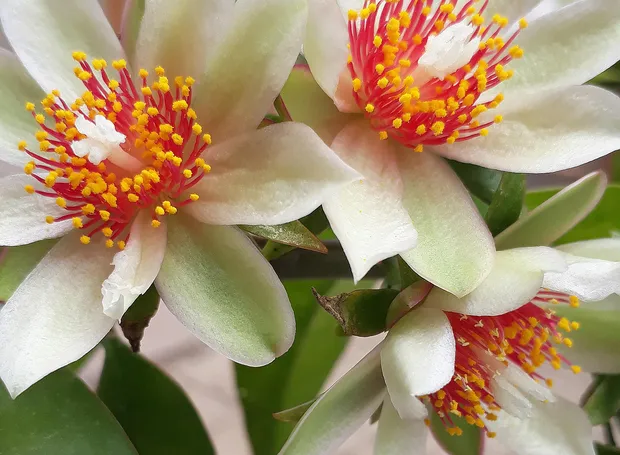
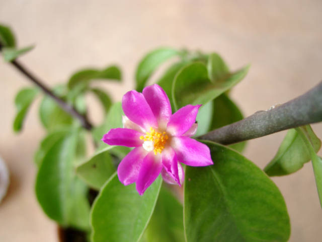
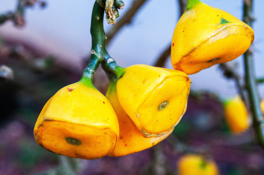

Curiosidades e mais explicações sobre a Ora-pro-Nóbis
A Ora-pro-Nóbis é uma planta trepadeira muito consumida
na região de Minas Gerais.
Apesar dos seus galhos espinhosos e resistentes, suas folhas são facilmente colhidas
e utilizadas na culinária. Ela é uma planta versátil e capaz de se desenvolver
em diversos tipos de solo, apresentando boa resistência a condições adversas.
Além disso, a ora-pro-nóbis pode ser consumida de diversas formas na alimentação,
seja como farinha, chá ou como ingrediente em saladas e sucos.
É uma planta bastante nutritiva e rica em proteínas, fibras, vitaminas e minerais,
como cálcio, ferro, zinco, manganês e ácido fólico, contribuindo para uma
alimentação saudável e balanceada. Por isso, a ora-pro-nóbis vem ganhando destaque na
culinária e na dieta de muitas pessoas que buscam
uma alimentação mais saudável e natural.
Existem diferentes tipos de ora-pro-nóbis:
-

Pereskia aculeata
Sendo os mais comuns, que é nativo do Brasil,
mais especificamente das regiões Sul, Sudeste e Nordeste.
Ele é muito consumido na culinária mineira e em outras partes do país. -

Pereskia grandifolia
Também conhecido como rosa-madeira e groselha-da-América,
é outra variedade de ora-pro-nóbis de origem brasileira.
Por ser uma planta ornamental muito bonita, ela também é cultivada em outros países. -

Pareskia bleo
Conhecido como rosa-madeira e groselha-da-América,
que é nativo da América Central, é um tipo menos comum no Brasil,
mas também possui propriedades medicinais e pode ser utilizado na alimentação.
O nome popular ora-pro-nobis é uma expressão latina que significa "rogai por nós". No folclore, a curiosa origem do nome vem de Minas Gerais, durante a época colonial do Brasil, quando a Pereskia aculeata era muito comum como cerca de antigas igrejas em pequenas cidades. Embora as folhas e frutos sejam comestíveis e valorizados, os padres não permitiam que os recolhesssem, por isso prestavam atenção aos fiéis. Era costume esperar até que o padre se distraisse durante a missa, para que os fiés pudessem colher a planta sem ver e, claro, sem ouvir o sermão... Os fiéis mantinham um olho no padre e outro na missa, esperando. Pelo momento de alarme, que foi logo no final, quando o padre rezou um longo canto litúrgico, gritando "rogai por nós". Como a missa era em latim, o horário do "ora-pro-nobis" era uma "indicação" para os fiéis quebrarem o sétimo mandamento e saírem da missa na hora do almoço...
ORA PRO NÓBIS: QUAL A IMPORTÂNCIA?
A Pereskia aculeata é uma planta amplamente reconhecida por
sua riqueza nutricional e propriedades benéficas à saúde humana.
Conhecida popularmente como Ora-pro-Nobis,
ela contém uma quantidade significativa de nutrientes essenciais
que contribuem para o adequado funcionamento do organismo.
Destaca-se o alto teor proteico dessa planta,
que auxilia na regulação dos movimentos intestinais
e proporciona uma sensação de saciedade.
Além disso, a Ora-pro-Nobis é uma excelente fonte
de nutrientes essenciais para o organismo humano,
como a vitamina A e ferro. Esses nutrientes ajudam a fortalecer o
sistema imunológico, prevenindo doenças infecciosas e inflamatórias.
A vitamina A
auxilia na saúde ocular e no funcionamento do sistema imunológico.
O ferro, por sua vez,
é crucial para a formação de hemoglobina,
prevenindo e tratando a anemia.
A Ora-pro-Nóbis é popularmente conhecida como "bife de pobre".
Esse nome se dá ao fato de que 25% da planta é proteína.
Dessa forma, a ora-pro-nóbis é uma ótima fonte de proteína para dietas
vegetarianas e veganas, por exemplo, além de ser barata e de fácil cultivo.
Em resumo, a Ora-pro-Nobis é uma planta rica em nutrientes e benefícios à saúde,
sendo uma excelente escolha para quem busca uma dieta equilibrada e saudável.
| Componente | Valor |
|---|---|
| Carboidrato total | 7,50g |
| Proteína | 2,59g |
| Cálcio | 26,5mg |
| Ferro | 0,08mg |
| Zinco | 0,47mg |
| Magnésio | 10,1mg |
| Vitamina B6 | 0,8mg |
Tabela Brasileira de Composição de Alimentos (TBCA).
Universidade de São Paulo (USP). Food Research Center (FoRC).
Versão 7.2. São Paulo, 2023. [Acesso em: 30/04/2023].
Disponível em: http://www.fcf.usp.br/tbca.